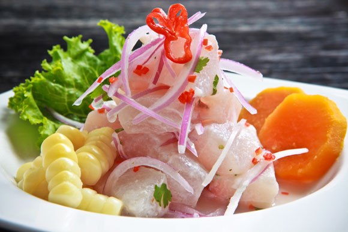

PLATILLOS PERUANOS
Ceviche peruano

Consiste en marinar la carne del pescado en un recipiente con mucho limón, ají, cebolla morada, culantro, sal y pimienta, hasta que esté lista para el consumo (unos 20 minutos). Es importante utilizar buen pescado, como mero, lenguado, corvina e incluso tilapia, y los acompañamientos son fundamentales tanto para el sabor como para la presentación.
Cuy

Además de tener un sabor suave y, para muchos, exquisito, la carne del cuy es rica en proteínas, hierro y baja en grasa, así que es una muy buena opción para los carnívoros que buscan una alimentación saludable. Hay muchas maneras de comerla y en la actualidad los restaurantes gourmet de Perú lo están aprovechando para crear nuevos platos, así que si es de lo que se impresionan con facilidad, esta es probablemente la mejor opción para probar cuy.
Rocoto relleno

El rocoto es una especie de ají endémica de Perú, del tamaño de una manzana y con un sabor dulzón. En este caso, el plato consiste en rellenar este fruto de carne molida, cebolla, aceitunas, queso fresco rallado y huevo duro, todo esto sofreído y sazonado con sal, comino y otros condimentos al gusto.
Ají de gallina

Se prepara con ají amarillo y, lo que diferencia al ají de gallina de cualquier otro guiso, es que se utilizan algunos ingredientes no tan comunes en este tipo de preparaciones, como pan de molde o galletas de soda, leche y pecanas, un tipo de nueces originarias de América del Norte.